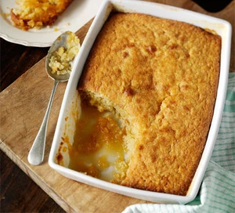

Go Back to Index Page

Author: Sarah Cook
Prep: 10-15 min
Cook: 30 min
Difficulty: Easy
Serves: 8
Description:
A simple baked version of this classic childhood pudding, with a zesty treacle sauce forming an irresistible puddle at the bottom.
Ingredients:
- 250g golden syrup
- zest 1 lemon, plus juice ½ lemon
- 5 tbsp breadcrumb
- 200g pack butter, softened
- 200g golden caster sugar
- 3 medium eggs
- 200g self-raising flour
- 5 tbsp milk
Steps:
- Heat oven to 180C/160C fan/gas 4. Mix the syrup, lemon zest, juice and breadcrumbs and spread over the base of a 1.5 litre baking dish.
- Beat the butter and sugar until pale and fluffy, then beat in the eggs, one by one. Stir in the flour and milk and dollop over the syrup. Bake for 35-40 mins until golden and risen, and a skewer poked into the sponge comes out clean-ish. Eat with lots of custard, cream or ice cream and extra dribbles of syrup.
Go Back to Top